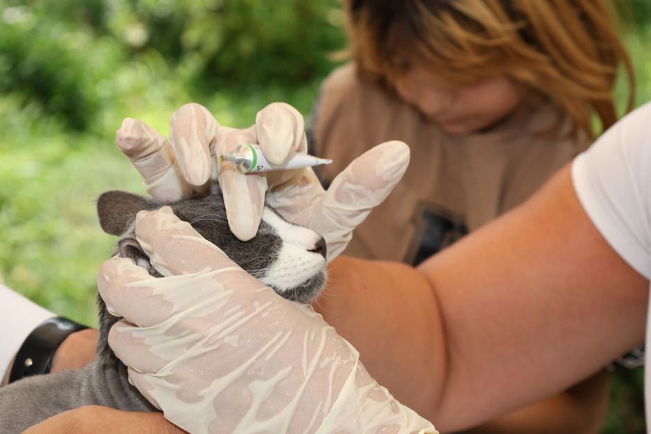

Quelles vaccinations sont nécessaires pour garantir la santé de votre animal

Photo: Tahir Xəlfəquliyev / Pexels
La vaccination protège votre animal contre des maladies graves, parfois mortelles. Le vétérinaire établit le programme selon l'espèce, l'âge, le mode de vie et les règles de votre région. Voici ce qu'il faut savoir pour bien comprendre ce qu'il vous propose.
Les vaccins de base du chien
- la maladie de Carré, la parvovirose et l'hépatite infectieuse (adénovirus), souvent regroupées dans un même vaccin ;
- la rage, obligatoire par la loi dans de nombreuses régions, y compris au Canada.
Selon le mode de vie, le vétérinaire peut en recommander d'autres, comme celui contre la leptospirose ou la toux de chenil.
Les vaccins de base du chat
- la panleucopénie (typhus du chat), le coryza (herpèsvirus et calicivirus), regroupés dans un même vaccin ;
- la rage, selon la loi de votre région ;
- la leucose féline (FeLV), recommandée pour les chatons et pour tout chat qui sort ou côtoie d'autres chats.
À quel âge commencer
Les premiers vaccins se donnent en général vers 6 à 8 semaines, puis des rappels sont faits toutes les 3 à 4 semaines jusqu'à environ 16 semaines. Ensuite, un rappel est fait à un an, puis à des intervalles que le vétérinaire adapte selon le produit et la loi (souvent tous les un à trois ans). Ne retardez pas ces rendez-vous : un chiot ou un chaton incomplètement protégé reste vulnérable.
Les autres animaux
Les lapins, les furets et les oiseaux ont leurs propres recommandations, qui varient selon les pays et les maladies présentes. Demandez à un vétérinaire qui connaît ces espèces. Les rongeurs comme les hamsters, les rats et les souris ne se vaccinent généralement pas.
Après un vaccin
Un peu de fatigue ou un petit gonflement à l'endroit de la piqûre pendant un jour ou deux est courant. Appelez la clinique tout de suite si vous voyez un gonflement du visage, des vomissements répétés, des difficultés à respirer ou une grande faiblesse.
Gardez un carnet à jour
Le carnet de vaccination est demandé pour les pensions, les toiletteurs, les voyages et l'inscription à la municipalité. Gardez-le avec vos documents et prenez-le à chaque visite.
L'essentiel
Les vaccins se donnent en clinique vétérinaire, par un professionnel : on ne les achète pas pour les administrer soi-même. Parlez-en à votre vétérinaire pour établir le calendrier de votre animal.
En tant que Partenaire Amazon, je réalise un bénéfice sur les achats remplissant les conditions requises.